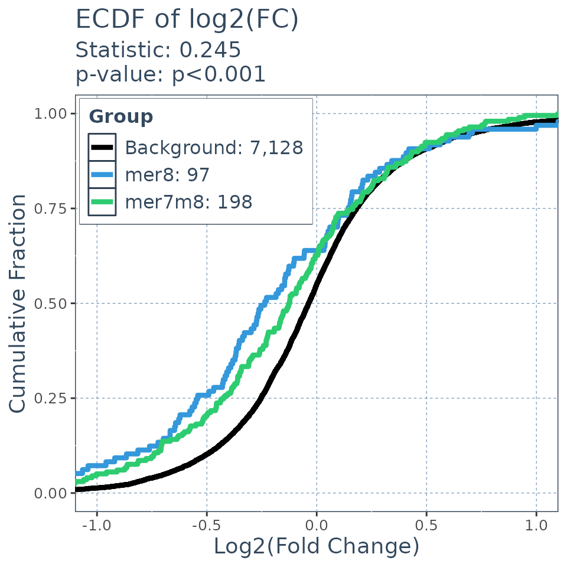

Find Matches to siRNA in Genomic Features with SeedMatchR
Tareian Cazares, Pradeep Pugalenthi, Richard Higgs, Jibo Wang, and Hatice Gulcin Ozer
SeedMatchR.RmdAbstract
On-target siRNA silencing of mRNA results from binding to fully complementary regions in transcripts to induce cleavage. Off-target siRNA gene knockdown can occur through several modes, one being a seed-mediated mechanism mimicking miRNA gene regulation. Seed-mediated off-target effects occur when the ~8 nucleotides at the 5’ end of the guide strand, called a seed region, bind the 3’ untranslated regions of mRNA, causing reduced translation. Experiments using siRNA knockdown paired with RNA-seq can be used to detect siRNA sequences with potential off-target effects driven by the seed region. ‘SeedMatchR’ provides tools for exploring and detecting potential seed-mediated off-target effects of siRNA in RNA-seq experiments. ‘SeedMatchR’ is designed to extend current differential expression analysis tools, such as ‘DESeq2’, by annotating results with predicted seed matches. Using publicly available data, we demonstrate the ability of ‘SeedMatchR’ to detect cumulative changes in differential gene expression attributed to siRNA seed regions.
Installation
You can install the development version of SeedMatchR from GitHub or the stable build from CRAN.
# Install from GitHub
install.packages("devtools")
devtools::install_github("tacazares/SeedMatchR")Quick start example with public siRNA data
Introduction to example dataset
This example uses the siRNA sequence, D1, targeting the Ttr gene in rat liver from the publication:
Schlegel MK, Janas MM, Jiang Y, Barry JD, Davis W, Agarwal S, Berman D, Brown CR, Castoreno A, LeBlanc S, Liebow A, Mayo T, Milstein S, Nguyen T, Shulga-Morskaya S, Hyde S, Schofield S, Szeto J, Woods LB, Yilmaz VO, Manoharan M, Egli M, Charissé K, Sepp-Lorenzino L, Haslett P, Fitzgerald K, Jadhav V, Maier MA. From bench to bedside: Improving the clinical safety of GalNAc-siRNA conjugates using seed-pairing destabilization. Nucleic Acids Res. 2022 Jul 8;50(12):6656-6670. doi: 10.1093/nar/gkac539. PMID: 35736224; PMCID: PMC9262600.The guide sequence of interest is 23 bp long and oriented 5’ -> 3’.
# siRNA sequence of interest targeting a 23 bp region of the Ttr gene
guide.seq = "UUAUAGAGCAAGAACACUGUUUU"Run modes and input data
SeedMatchR can be run in two different modes. The first
mode is designed for DESEQ2 differential expression results
and the second mode is designed for finding exact match positions
regardless of differential expression data.
-
DESEQ2mode will map a column of match counts to adata.frameof differential expression resutls. -
data.framemodel will return adata.frameof matches that correspond to the interval ranges for matches in the inputDNAStringSetlibrary being searched.
The required inputs to SeedMatchR are list below:
- A character string representing the siRNA RNA sequence. This must be greater than 8 bp.
-
GTF: gene transfer file containing species specific genomic information for gene bodies. This is used to derive the list of 3’ UTRs and other features used in the analysis. This is also used to map transcript IDs to gene IDs. - Feature-specific
DNAStringSet: ADNAStringSetobject of sequences for each of the features of interest. The features must be named according to the transcript they were derived from. Examples include those generated byGenomicFeatures::extractTranscriptSeqs()paired with functions likeGenomicFeatures::threeUTRsByTranscript(). - Seed name of the canonical seed you want to search or a custom definition with associated start and stop positions on the siRNA.
Optional input:
-
res: A data frame of DESEQ2 results. If a DESEQ2 results are provided as adata.frame, thenSeedMatchRwill map that total match counts as a new column in thedata.frame.
SeedMatchR provides functions for helping to wrangle the
many data types and annotations. SeedMatchR makes extensive
use of AnnotationHub to help access genomic annotations in
a reproducible manner.
Prepare species-specific annotation data
The function load_annotations() has built in annotation
data for human, rat, and mouse annotations. More information can be
found in the
vignette on annotations. We can load the species specific
annotations using the approach described below. Running this function
will take several minutes. Therefore it might be helpful to save the
objects and reload them later if you plan to use this code in a repeated
workflow.
# Load the species specific annotation database object
annodb = load_annotations(reference.name = "rnor6", canonical = FALSE, min.feature.width = 8, longest.utr = T)Prepare DESEQ2 Results
The DESEQ2 mode of SeedMatchR assumes that
you will be performing your analysis on DESEQ2 results
outputs. The first step is to load your DESEQ2 results file
as a data.frame.
The test data that is provided with SeedMatchR was
derived from the 2022 publication by Schlegel et al. The data set
represents a DESeq2 analysis performed on rat liver that had been
treated with Ttr targeting siRNA. We will use this example to explore
seed mediated activity. The data set name is long, so it will be renamed
to res.
Download data (only need to perform once)
We start by downloading the example data set. This function will download three files from the GEO accession GSE184929. These files represent three samples with different siRNA treatments at two dosages.
get_example_data("sirna")
#> Example data directory being created at: /home/runner/.local/share/R/SeedMatchR
#> Warning in dir.create(data.path, recursive = TRUE):
#> '/home/runner/.local/share/R/SeedMatchR' already existsLoad example data
We can load the example data into the environment.
sirna.data = load_example_data("sirna")The DESeq2 results are available through the names
Schlegel_2022_Ttr_D1_30mkg,
Schlegel_2022_Ttr_D4_30mkg and
Schlegel_2022_Ttr_D1_10mkg. The data set name is long, so
it will be renamed to res.
res <- sirna.data$Schlegel_2022_Ttr_D1_30mkgThe DESEQ2 results file is then filtered. The function
filter_res() can be used to filter a results file by
log2FoldChange, padj, baseMean, and remove NA entries.
# Dimensions before filtering
dim(res) # [1] 32883 6
#> [1] 32883 8
# Filter DESeq2 results for SeedMatchR
res = filter_res(res)
# Dimensions after filtering
dim(res) # [1] 13582 8
#> [1] 8124 8Get the seed sequence of interest
You can extract the seed sequence information from the siRNA input
sequence using the get_seed() function. The inputs to the
get_seed() function are the siRNA sequence of interest and
the name of the seed.
# Get the seed sequence information for the seed of interest
seed = get_seed(guide.seq = guide.seq, seed.name = "mer7m8")
seed
#> $Seed.Name
#> [1] "mer7m8"
#>
#> $Guide
#> 23-letter RNAString object
#> seq: UUAUAGAGCAAGAACACUGUUUU
#>
#> $Seed.Seq.RNA
#> 7-letter RNAString object
#> seq: UAUAGAG
#>
#> $Seed.Seq.DNA
#> 7-letter DNAString object
#> seq: TATAGAG
#>
#> $Target.Seq
#> 7-letter DNAString object
#> seq: CTCTATACounting seed matches in transcripts
You can perform a seed match for a single seed using the
SeedMatchR() function.
res = SeedMatchR(res = res,
seqs = annodb$seqs,
sequence = guide.seq,
seed.name = "mer7m8")
head(res)
#> gene_id baseMean log2FoldChange lfcSE stat pvalue
#> 1 ENSRNOG00000016275 2138.0945 -8.164615 NA -23.61818 2.507268e-123
#> 2 ENSRNOG00000000127 437.6342 -1.346927 0.1068629 -12.60425 2.000712e-36
#> 3 ENSRNOG00000047179 1590.1745 -1.262411 0.1031403 -12.23974 1.906387e-34
#> 4 ENSRNOG00000030187 131.9206 3.422725 0.3032352 11.28736 1.515189e-29
#> 5 ENSRNOG00000008050 38.9921 -3.442834 0.3192776 -10.78320 4.132589e-27
#> 6 ENSRNOG00000008816 400.9526 2.794453 0.2661369 10.50006 8.632549e-26
#> padj symbol mer7m8
#> 1 3.405371e-119 Ttr 1
#> 2 1.358683e-32 Kpna6 0
#> 3 8.630849e-31 Aplp2 1
#> 4 5.144824e-26 Mmp12 0
#> 5 1.122577e-23 Stac3 0
#> 6 1.954121e-22 Gpnmb 0Match multiple seeds
You can perform seed matching for all available seeds using a for loop. The results will be appended as a new column to the results data frame.
for (seed in c("mer8", "mer6", "mer7A1")){
res = SeedMatchR(res = res,
seqs = annodb$seqs,
sequence = guide.seq,
seed.name = seed)
}
head(res)
#> gene_id baseMean log2FoldChange lfcSE stat pvalue
#> 1 ENSRNOG00000016275 2138.0945 -8.164615 NA -23.61818 2.507268e-123
#> 2 ENSRNOG00000000127 437.6342 -1.346927 0.1068629 -12.60425 2.000712e-36
#> 3 ENSRNOG00000047179 1590.1745 -1.262411 0.1031403 -12.23974 1.906387e-34
#> 4 ENSRNOG00000030187 131.9206 3.422725 0.3032352 11.28736 1.515189e-29
#> 5 ENSRNOG00000008050 38.9921 -3.442834 0.3192776 -10.78320 4.132589e-27
#> 6 ENSRNOG00000008816 400.9526 2.794453 0.2661369 10.50006 8.632549e-26
#> padj symbol mer7m8 mer8 mer6 mer7A1
#> 1 3.405371e-119 Ttr 1 1 1 1
#> 2 1.358683e-32 Kpna6 0 0 0 0
#> 3 8.630849e-31 Aplp2 1 0 1 0
#> 4 5.144824e-26 Mmp12 0 0 0 0
#> 5 1.122577e-23 Stac3 0 0 0 0
#> 6 1.954121e-22 Gpnmb 0 0 0 0Match seeds with mismatches and indels allowed
You can also allow for inexact seed matches in your analysis with the
mismatches and indels arguments. The names can
be adjusted to reflect the arguments using the col.name
argument.
for (indel.bool in c(TRUE, FALSE)){
for (mm in c(0,1)){
for (seed in c("mer7m8", "mer8", "mer6", "mer7A1")){
res <- SeedMatchR(res = res,
seqs = annodb$seqs,
sequence = guide.seq,
seed.name = seed,
col.name = paste0(seed,
".",
"mm", mm,
"_indel", indel.bool),
max.mismatch = mm,
with.indels = indel.bool)
}
}
}
head(res)
#> gene_id baseMean log2FoldChange lfcSE stat pvalue
#> 1 ENSRNOG00000016275 2138.0945 -8.164615 NA -23.61818 2.507268e-123
#> 2 ENSRNOG00000000127 437.6342 -1.346927 0.1068629 -12.60425 2.000712e-36
#> 3 ENSRNOG00000047179 1590.1745 -1.262411 0.1031403 -12.23974 1.906387e-34
#> 4 ENSRNOG00000030187 131.9206 3.422725 0.3032352 11.28736 1.515189e-29
#> 5 ENSRNOG00000008050 38.9921 -3.442834 0.3192776 -10.78320 4.132589e-27
#> 6 ENSRNOG00000008816 400.9526 2.794453 0.2661369 10.50006 8.632549e-26
#> padj symbol mer7m8 mer8 mer6 mer7A1 mer7m8.mm0_indelTRUE
#> 1 3.405371e-119 Ttr 1 1 1 1 1
#> 2 1.358683e-32 Kpna6 0 0 0 0 0
#> 3 8.630849e-31 Aplp2 1 0 1 0 1
#> 4 5.144824e-26 Mmp12 0 0 0 0 0
#> 5 1.122577e-23 Stac3 0 0 0 0 0
#> 6 1.954121e-22 Gpnmb 0 0 0 0 0
#> mer8.mm0_indelTRUE mer6.mm0_indelTRUE mer7A1.mm0_indelTRUE
#> 1 1 1 1
#> 2 0 0 0
#> 3 0 1 0
#> 4 0 0 0
#> 5 0 0 0
#> 6 0 0 0
#> mer7m8.mm1_indelTRUE mer8.mm1_indelTRUE mer6.mm1_indelTRUE
#> 1 1 1 2
#> 2 11 3 29
#> 3 3 2 12
#> 4 0 0 6
#> 5 1 1 1
#> 6 1 0 7
#> mer7A1.mm1_indelTRUE mer7m8.mm0_indelFALSE mer8.mm0_indelFALSE
#> 1 1 1 1
#> 2 7 0 0
#> 3 6 1 0
#> 4 4 0 0
#> 5 1 0 0
#> 6 1 0 0
#> mer6.mm0_indelFALSE mer7A1.mm0_indelFALSE mer7m8.mm1_indelFALSE
#> 1 1 1 1
#> 2 0 0 6
#> 3 1 0 3
#> 4 0 0 0
#> 5 0 0 1
#> 6 0 0 1
#> mer8.mm1_indelFALSE mer6.mm1_indelFALSE mer7A1.mm1_indelFALSE
#> 1 1 1 1
#> 2 3 18 6
#> 3 2 12 6
#> 4 0 2 1
#> 5 1 1 1
#> 6 0 6 0Returning match positions
Return as data frame
match.df = SeedMatchR(seqs = annodb$seqs,
sequence = guide.seq,
seed.name = "mer7m8",
res.format = "data.frame")
head(match.df)
#> seqnames start end width
#> 1 ENSRNOG00000000091 2427 2433 7
#> 2 ENSRNOG00000000170 3031 3037 7
#> 3 ENSRNOG00000000299 217 223 7
#> 4 ENSRNOG00000000415 1198 1204 7
#> 5 ENSRNOG00000000543 659 665 7
#> 6 ENSRNOG00000000569 777 783 7Return as GRanges
match.df = SeedMatchR(seqs = annodb$seqs,
sequence = guide.seq,
seed.name = "mer7m8",
res.format = "granges")
head(match.df)
#> GRanges object with 6 ranges and 0 metadata columns:
#> seqnames ranges strand
#> <Rle> <IRanges> <Rle>
#> [1] ENSRNOG00000000091 2427-2433 *
#> [2] ENSRNOG00000000170 3031-3037 *
#> [3] ENSRNOG00000000299 217-223 *
#> [4] ENSRNOG00000000415 1198-1204 *
#> [5] ENSRNOG00000000543 659-665 *
#> [6] ENSRNOG00000000569 777-783 *
#> -------
#> seqinfo: 541 sequences from an unspecified genome; no seqlengthsScan all sequences for all match types
match.df = full_search(guide.seq = guide.seq,
seqs = annodb$seqs,
"Ttr")
head(match.df)
#> seqs Full.mm0 Full.mm1 Full.mm2 Full.mm3 Full.mm4 18mer.mm0
#> 1 ENSRNOG00000000007 0 0 0 0 0 0
#> 2 ENSRNOG00000000008 0 0 0 0 0 0
#> 3 ENSRNOG00000000009 0 0 0 0 0 0
#> 4 ENSRNOG00000000010 0 0 0 0 0 0
#> 5 ENSRNOG00000000012 0 0 0 0 0 0
#> 6 ENSRNOG00000000017 0 0 0 0 0 0
#> 18mer.mm1 18mer.mm2 18mer.mm3 18mer.mm4 15mer.mm0 15mer.mm1 15mer.mm2
#> 1 0 0 0 0 0 0 0
#> 2 0 0 0 0 0 0 0
#> 3 0 0 0 0 0 0 0
#> 4 0 0 0 0 0 0 0
#> 5 0 0 0 0 0 0 0
#> 6 0 0 0 0 0 0 0
#> 15mer.mm3 15mer.mm4 mer8.mm0 mer8.mm1 mer7m8.mm0 mer7m8.mm1 mer7A1.mm0
#> 1 0 0 0 0 0 2 0
#> 2 0 0 0 0 0 0 0
#> 3 0 0 0 0 0 0 0
#> 4 1 1 0 1 0 1 0
#> 5 0 0 0 0 0 0 0
#> 6 0 0 0 0 0 0 0
#> mer7A1.mm1 mer6.mm0 mer6.mm1 Group best.match
#> 1 0 0 16 Ttr No.matches
#> 2 0 0 0 Ttr No.matches
#> 3 0 0 3 Ttr No.matches
#> 4 1 0 2 Ttr 15mer-D3
#> 5 0 0 0 Ttr No.matches
#> 6 0 0 1 Ttr No.matchesCreate a SeedMatchReport
report = SeedMatchReport(res = res,
seqs = annodb$seqs,
group.name = "Ttr",
guide.seq = guide.seq)
report$table| In-silico siRNA Binding Prediction | ||||||||||||||||||||
| Identifying siRNA hits in the transcriptome | ||||||||||||||||||||
|
Full Guide Strand (g2:g23)
|
18-mer (g2:g19)
|
15-mer (g2:g19)
|
8mer | 7mer-m8 | 7mer-A1 | 6mer | Total | |||||||||||||
|---|---|---|---|---|---|---|---|---|---|---|---|---|---|---|---|---|---|---|---|---|
| D0 | D1 | D2 | D3 | D4 | D0 | D1 | D2 | D3 | D4 | D0 | D1 | D2 | D3 | D4 | ||||||
| Ttr | ||||||||||||||||||||
| In silico predictions | 0 | 1 | 0 | 1 | 20 | 0 | 0 | 1 | 82 | 1,124 | 0 | 0 | 8 | 1,100 | 6,765 | 15 | 27 | 55 | 135 | 9,334 |
| Expressed predictions | 0 | 1 | 0 | 1 | 11 | 0 | 0 | 0 | 53 | 663 | 0 | 0 | 3 | 642 | 3,483 | 6 | 9 | 31 | 66 | 4,969 |
| Off-target predictions | 0 | 1 | 0 | 1 | 2 | 0 | 0 | 0 | 5 | 31 | 0 | 0 | 0 | 28 | 124 | 1 | 0 | 2 | 7 | 202 |
| % off-target | 0.00% | 100.00% | 0.00% | 100.00% | 18.18% | 0.00% | 0.00% | 0.00% | 9.43% | 4.68% | 0.00% | 0.00% | 0.00% | 4.36% | 3.56% | 16.67% | 0.00% | 6.45% | 10.61% | 4.07% |
Comparing the expression profiles of seed targets to background
Many factors that perturb gene expression, like miRNA, show cumulative changes in their targets gene expression. Cumulative changes in the profile of genes expression can be visualized and tested with the emperical distribution function (ecdf) coupled with a statistical test such as the Kolmogorov-Smirnov test.
SeedMatchR provides functions for comparing the
log2(Fold Change) of two gene sets. The function
deseq_fc_ecdf is designed to work directly with a DESeq2
results data frame.
Required Inputs:
-
res:DESEQ2resultsdata.frame -
gene.lists: A list of lists containing gene names
# Gene set 1
mer7m8.list = res$gene_id[res$mer7m8 >= 1 & res$mer8 ==0]
# Gene set 2
mer8.list = res$gene_id[res$mer8 >= 1]
background.list = res$gene_id[res$mer7m8 == 0 & res$mer8 == 0]
ecdf.results = deseq_fc_ecdf(res,
title = "ECDF of log2(FC)",
list("Background" = background.list,
"mer8" = mer8.list, "mer7m8" = mer7m8.list),
stats_test = "KS",
factor_order = c("Background", "mer8", "mer7m8"),
null_name = "Background",
target_name = "mer8",
alternative = "greater",
height = 5,
width = 5)
ecdf.results$plot
sessionInfo()
#> R version 4.5.1 (2025-06-13)
#> Platform: x86_64-pc-linux-gnu
#> Running under: Ubuntu 24.04.2 LTS
#>
#> Matrix products: default
#> BLAS: /usr/lib/x86_64-linux-gnu/openblas-pthread/libblas.so.3
#> LAPACK: /usr/lib/x86_64-linux-gnu/openblas-pthread/libopenblasp-r0.3.26.so; LAPACK version 3.12.0
#>
#> locale:
#> [1] LC_CTYPE=C.UTF-8 LC_NUMERIC=C LC_TIME=C.UTF-8
#> [4] LC_COLLATE=C.UTF-8 LC_MONETARY=C.UTF-8 LC_MESSAGES=C.UTF-8
#> [7] LC_PAPER=C.UTF-8 LC_NAME=C LC_ADDRESS=C
#> [10] LC_TELEPHONE=C LC_MEASUREMENT=C.UTF-8 LC_IDENTIFICATION=C
#>
#> time zone: UTC
#> tzcode source: system (glibc)
#>
#> attached base packages:
#> [1] stats4 stats graphics grDevices utils datasets methods
#> [8] base
#>
#> other attached packages:
#> [1] ensembldb_2.32.0 AnnotationFilter_1.32.0 rtracklayer_1.68.0
#> [4] GenomicFeatures_1.60.0 AnnotationDbi_1.70.0 Biobase_2.68.0
#> [7] GenomicRanges_1.60.0 GenomeInfoDb_1.44.0 IRanges_2.42.0
#> [10] S4Vectors_0.46.0 BiocGenerics_0.54.0 generics_0.1.4
#> [13] SeedMatchR_2.0.0
#>
#> loaded via a namespace (and not attached):
#> [1] tidyselect_1.2.1 farver_2.1.2
#> [3] dplyr_1.1.4 blob_1.2.4
#> [5] filelock_1.0.3 Biostrings_2.76.0
#> [7] bitops_1.0-9 fastmap_1.2.0
#> [9] RCurl_1.98-1.17 lazyeval_0.2.2
#> [11] BiocFileCache_2.16.0 GenomicAlignments_1.44.0
#> [13] XML_3.99-0.18 digest_0.6.37
#> [15] mime_0.13 lifecycle_1.0.4
#> [17] ProtGenerics_1.40.0 KEGGREST_1.48.1
#> [19] RSQLite_2.4.1 magrittr_2.0.3
#> [21] compiler_4.5.1 rlang_1.1.6
#> [23] sass_0.4.10 tools_4.5.1
#> [25] gt_1.0.0 yaml_2.3.10
#> [27] knitr_1.50 labeling_0.4.3
#> [29] S4Arrays_1.8.1 htmlwidgets_1.6.4
#> [31] bit_4.6.0 curl_6.4.0
#> [33] DelayedArray_0.34.1 RColorBrewer_1.1-3
#> [35] xml2_1.3.8 abind_1.4-8
#> [37] BiocParallel_1.42.1 withr_3.0.2
#> [39] purrr_1.1.0 desc_1.4.3
#> [41] grid_4.5.1 ggplot2_3.5.2
#> [43] scales_1.4.0 SummarizedExperiment_1.38.1
#> [45] cli_3.6.5 rmarkdown_2.29
#> [47] crayon_1.5.3 ragg_1.4.0
#> [49] httr_1.4.7 rjson_0.2.23
#> [51] DBI_1.2.3 cachem_1.1.0
#> [53] parallel_4.5.1 BiocManager_1.30.26
#> [55] XVector_0.48.0 restfulr_0.0.16
#> [57] matrixStats_1.5.0 vctrs_0.6.5
#> [59] Matrix_1.7-3 jsonlite_2.0.0
#> [61] bit64_4.6.0-1 systemfonts_1.2.3
#> [63] jquerylib_0.1.4 glue_1.8.0
#> [65] pkgdown_2.1.3 codetools_0.2-20
#> [67] gtable_0.3.6 BiocVersion_3.21.1
#> [69] BiocIO_1.18.0 UCSC.utils_1.4.0
#> [71] tibble_3.3.0 pillar_1.11.0
#> [73] rappdirs_0.3.3 htmltools_0.5.8.1
#> [75] GenomeInfoDbData_1.2.14 R6_2.6.1
#> [77] dbplyr_2.5.0 textshaping_1.0.1
#> [79] evaluate_1.0.4 lattice_0.22-7
#> [81] AnnotationHub_3.16.0 png_0.1-8
#> [83] Rsamtools_2.24.0 memoise_2.0.1
#> [85] bslib_0.9.0 SparseArray_1.8.0
#> [87] xfun_0.52 fs_1.6.6
#> [89] MatrixGenerics_1.20.0 pkgconfig_2.0.3